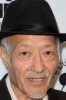

País:Estados Unidos, 98 minutos.
Idiomas:Mandarín, Inglés
GénerosTerror, Ciencia Ficción, Suspenso, Acción
Director/es:Ernie Barbarash
Guionistas:Mike MacLean
Códec de vídeo:Unknown
Número: 7


Certificación:
Argumento:
Un hombre sale de la fuente de un parque en la ciudad de Ho Chi Minh sin recordar quién es ni de dónde vino. Mientras recorre la ciudad, reuniendo pistas sobre su pasado, es perseguido sin descanso por figuras misteriosas.
Reparto 

Medio: Archivo de video,
Localización: D:\Multimedia\Películas\Abducción (2019)\Abducción (2019).mkv
Prestado: No
Rel. aspecto: Unknown